The Savannah River Plant in South Carolina made plutonium and tritium for American nuclear weapons from 1953 until 1988. Its story is not over: while it cleans up that legacy, it is gearing up for new weapons work. From people moved off the land to what is happening now, told through resources held in Democracy's Library, the Wayback Machine and Internet Archive collections.
Every citation is tagged with where its source is held: DL Democracy's Library, WB the Wayback Machine, IA the Internet Archive, OL Open Library, EXT held elsewhere.
In 1950 the Atomic Energy Commission was expanding the nation's production of
material for nuclear weapons, and it asked the Du Pont company to build and
run new reactors to make it. In June, with war begun in Korea, the order grew to five heavy-water reactors (WB: SRS at Fifty ch. 7).
Du Pont's contract with the commission covered designing, building and running the plant, and its stated fee was one dollar (WB: SRS at Fifty, p. 90). The
project became the Savannah River Plant, renamed the Savannah River Site in
1989 (WB: srs.gov 1980s).
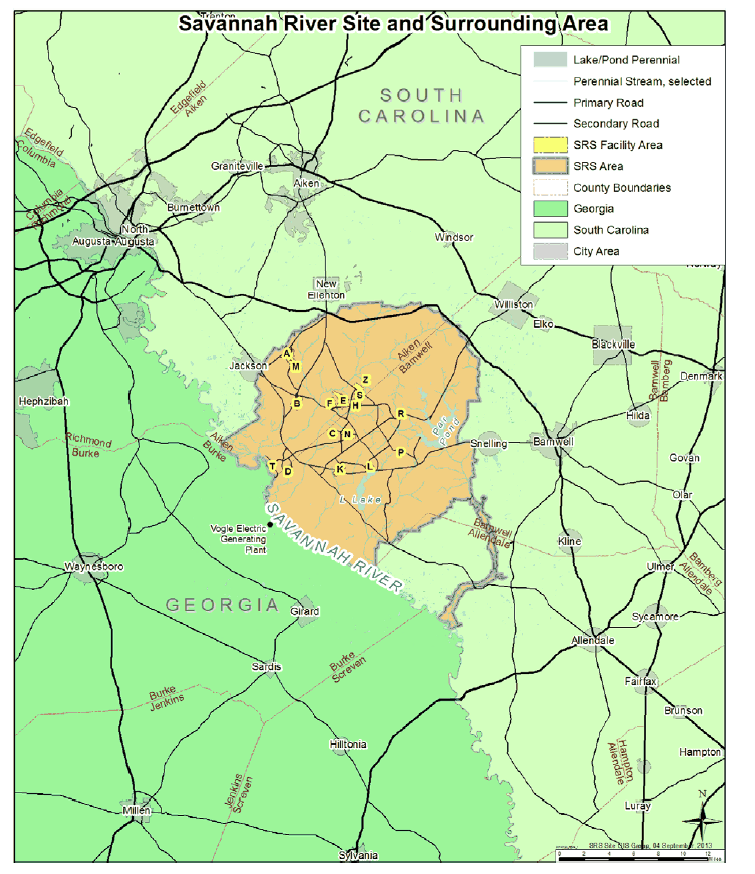
The site and the towns around it, among them Jackson and New Ellenton at its northern edge. The letters mark operating areas, including the five reactor areas C, K, L, P and R. Department of Energy map from the site’s environmental report for 2012, now preserved in Wayback. Public domain, via Wikimedia Commons.
Du Pont surveyed candidate sites and settled on the middle Savannah River in
South Carolina, a tract big enough to hold an exclusion zone around the
reactors (WB: ch. 7). The Department of Energy (DOE), the commission's successor, dates President Truman's letter to Du Pont to October 20, 1950 (WB: DOE,
energy.gov/srs).
The announcement came at noon on November 28, 1950: about 250,000 acres in
Aiken and Barnwell counties, to be called the Savannah River Plant, designed,
built and operated by Du Pont (WB: SRS at Fifty ch. 8). The next
morning it was in the Atlanta Constitution
(IA)
and in newspapers as far away as Victoria, British Columbia
(IA).
The land was not empty. It held small, rural farming communities. Most of
the farms were worked by tenants, and most of the farm workers were African
American (WB: ch. 7). The largest town, Ellenton, had about 600 people; it
began as a railroad station in 1873
(WB: ch. 7; WB: SRARP, 1996). Dunbarton, with
231 people, was a railroad town incorporated in 1910
(WB: ch. 7; WB: SRARP, 1993).
Smaller settlements, among them Meyers Mill, Hawthorne, Robbins, Leigh and
Hattieville, were mostly stops on the railroad. Du Pont moved the boundary to
leave out two others, Jackson and Snelling (WB: ch. 7). Ellenton
had a violent past: in 1876, during Reconstruction, armed white rifle clubs
marched on Black militia there in what became known as the Ellenton riot (WB:
SRARP).
A state historical marker for the town of Ellenton stands on Highway 64 at
Barnwell (WB: Historical Marker Database). A second marker,
titled "Site of Ellenton" and put up in 1993 by the Ellenton Reunion
Organization, stands on Atomic Road, State Highway 125, near Jackson (WB:
Historical Marker Database).
Ellenton and the farmland around it on a 1949 topographic map, the year before the plant was announced. US government map, public domain, via Wikimedia Commons.
How many people were moved depends on who is counting. The first press
release spoke of about 1,500 families; early reports said up to 8,000
farmers; the AEC (Atomic Energy Commission) settled on 6,000 people in 1,500 families
(WB: ch. 8). The Savannah River Archaeological Research Program
later put it at about 5,000 (WB: SRARP).
The process of acquiring the land was run by the Army Corps of Engineers,
with residents of the first area gone by March 15, 1951, and of the second
by June 1. Landowners who disputed their land appraisal went to federal
condemnation proceedings. At least 4,500 graves had to be moved
(WB: ch. 8). By late 1951 the government was acquiring 265 tracts
in Ellenton alone
(DL).
A cemetery on the site, then and about 2010. Families could move their dead or leave them; many cemeteries remain inside the fence. US Department of Energy photographs, public domain, via Wikimedia Commons.
Owners objected to how their land was bought. A congressional staff report
in late 1951 found Ellenton residents told to be gone by February 1952, while
their property was still unappraised. Each owner was given a single offer at
the appraised value. Those who took the first offer were as much as 20
percent worse off than those who held out. About a hundred owners met twice
to protest the prices.
The Atomic Energy Commission answered that most condemnations came from
defects in title rather than price: owners who could not show clear legal
ownership, often because land had passed to many heirs, or who could not be
found. Of 169 cases it listed, 39 were over price and 130 over title. It conceded that juries in seven
contested cases had awarded substantially more than the government's
appraisal
(DL).
The magazine The Reporter brought the story to the nation in March 1951,
when it reported on the quiet doom of Ellenton
(IA). Jet told a
different part of it that December, focusing on Black families moving whole
houses fifteen miles to New Ellenton, the replacement town. Its photograph ran
under the heading "H-Bomb Victims"
(IA).
A 1965 federal
housing study counted about 30 white and 120 Black families relocated near New
Ellenton (IA), and by
1953 Congress was hearing that New Ellenton had been left out of aid it needed
(DL).
Ellenton itself closed in the first months of 1952. Its schools closed in
February (WB: SRS at Fifty, p. 158), its post office
handled its last mail on February 29 (WB: p. 160), and the
last passenger train stopped at its station on April 12 (WB: p. 220).
The displaced spoke for themselves decades later, in oral histories
collected from 1990 and published as Memories of Home for Ellenton and for
Dunbarton and Meyers Mill (WB: OSTI 272945; WB: OSTI
10171577). The archaeology program's web pages and the chapter PDFs survive in Wayback; srarp.org itself is gone (WB; WB:
Ellenton volume).
James McBride's life of James Brown traces part of the singer's family to
Ellenton, where relatives "cared for one another's children"
(IA). Louise
Cassels's The Unexpected Exodus (1971), the classic memoir of the leaving,
is cataloged in Open Library, though it has no copy to read or borrow yet
(OL: Open Library).
Ellenton at its railroad crossing before the plant, and the same crossing about 2010. US Department of Energy photographs, public domain, via Wikimedia Commons.
As the last families left, the work of building the plant was already under way; Building the Plant follows it.
According to the Natural Resources Defense Council, construction began on
reactors in 1951 (reactor R in June, P in July, L in October)
(IA). Employment on the project peaked at 38,582 during construction (WB: SRS at Fifty, p. 184). The Bureau of Labor Statistics followed the work force in a 1952 study (IA: part
I).
The study records Black tenant farmers arriving in Augusta looking for jobs in May
1951. At an NAACP (National Association for the Advancement of Colored People)
meeting in Aiken that September, speakers accused Du Pont and an Augusta union
of keeping Black workers out of skilled jobs, and said they had enough
evidence to go to court.
P reactor's building, 105-P, under construction on May 29, 1952. US Department of Energy photograph, public domain, via Wikimedia Commons.
Getting hired was a fight of its own. In November 1951 a House labor
subcommittee under Graham Barden held five days of hearings in Augusta on
charges that union membership had become a condition of work
(DL).
Its report the next year found that Du Pont hired manual labor through a
verbal understanding with the AFL (American Federation of Labor) building-trades unions, turning job
seekers away at the gate, and that Atomic Energy Commission officials had
either approved or failed to find out
(DL).
In November 1952 pickets from an AFL engineers' union nearly stopped
construction, with about 25,000 other workers honoring the line
(IA).
The same system kept Black workers out of the skilled trades. The National
Urban League's field notes, filed with the Barden hearings, record that it
pressed Du Pont in August 1951 over its failure to hire Black electricians,
mechanics, plumbers, welders and ironworkers.
Company officials replied that as long as the unions could supply the workers,
they would hire from no other source. Apart from 116 Black carpenters, they
would not say how many Black workers they employed
(DL).
When Truman created a committee on government contract compliance that
December, Jet expected the Savannah River contractors to be among its first
targets (IA).
Housing the workers was its own crisis. In February 1951 Congress held a
hearing in Aiken. It expected construction to peak around the start of 1953
(DL).
A year later, in February 1952, the mayors of New Ellenton and Augusta
testified about dormitories and about Du Pont's part in housing workers
(DL).
In 1953 House & Home reported about 4,000 trailers for married workers
(IA). The housing
builder later sued Du Pont in a case that reached the Supreme Court
(DL), and South
Carolina's attempt to tax Du Pont's work on the plant set out what a
government-owned, contractor-operated plant was in law
(DL).
Du Pont wrote its own record of all this, volume by volume, in construction
and design histories now on OSTI (Office of Scientific and Technical Information) (WB: OSTI 10159481;
WB: OSTI 10151705). The company's administrative files
are at the Hagley Museum and Library (WB: DOE finding aid).
By the mid-1950s the plant was built. The next section, Running the Reactors, follows its reactors and separations plants at work.
Running the Reactors
The 305-M test pile was the first reactor on the site to start up, in 1952,
the year heavy-water production began in D Area, one of the site's lettered work areas (WB: srs.gov
1950s). R reactor started up in December 1953, P on February
20, 1954, and all five were running by the end of March 1955 (WB: SRS
at Fifty ch. 11).
How a production reactor worked: heavy water moderated and cooled the reactor, river water cooled the heavy water, and irradiated fuel and targets went from the disassembly basin to the separations areas. Diagram from The Savannah River Site at Fifty (2002), p. 331. US Department of Energy, public domain, via Wikimedia Commons.
The separations plants took the irradiated fuel and targets from the
reactors, dissolved them, and used chemistry to pull out the plutonium and
other products, leaving the radioactive waste behind. F Area was the world's
first full-scale plant to use this method, called Purex, and purified
plutonium; H Area mostly recovered enriched uranium (WB: ch. 11).
F Area started in 1954 and H Area in 1955. Tritium, a radioactive form of hydrogen used in nuclear weapons, went to the AEC (Atomic Energy Commission) from 1955, and the basic plant was complete in 1956 (WB: srs.gov
1950s; WB: History Highlights). The first
shipment of radioactive plutonium is dated December 1954 by one official source and 1955
by others (WB: ch. 11; WB).
Workers inside a reactor building with an empty reactor vessel, the tank that would hold the fuel, targets and heavy water, in the 1950s. US Department of Energy photograph, public domain, via Wikimedia Commons.
P reactor also served pure science. In 1955 and 1956 two Los Alamos
physicists, Frederick Reines and Clyde Cowan, set up detectors beside it (WB:
SRS at Fifty ch. 13).
Reactors give off huge numbers of neutrinos, tiny particles with no electric
charge that pass through almost everything (WB: Nobel Prize,
1995). In June 1956 they announced the first detection of the
neutrino (WB: ch. 13). Reines shared the 1995 Nobel Prize in
Physics for it; Cowan had died by then (WB: Nobel Prize).
Then demand for weapons materials fell. R reactor shut down in 1964 and L in
1968, both because less nuclear material was needed
(DL: Senate hearing, 1983;
WB: srs.gov 1960s). The heavy-water components test reactor, built to test parts for heavy-water power reactors, also closed in December 1964, for a different reason: the AEC was turning away
from heavy-water power reactors, and it was never restarted
(WB: ch. 13).
Making plutonium and tritium also meant releasing radioactivity into the air, the ground and the water, and the plant's own count of those releases turned out to be too low, as Radioactive Releases shows.
Radioactive Releases
The plant's own figures understated its early releases. The CDC's (Centers for
Disease Control and Prevention's) dose reconstruction, a later study that estimated the doses people received, found that the
radioactive iodine-131 released to the air in the 1950s, mainly from the
separations plants, was about four times what the site had reported.
That was largely because its samplers caught only one chemical form of the
iodine (WB: CDC dose reconstruction, Phase II ch. 1). The largest
tritium releases to the air came in 1957–59 from the H Area tritium facilities
(WB).
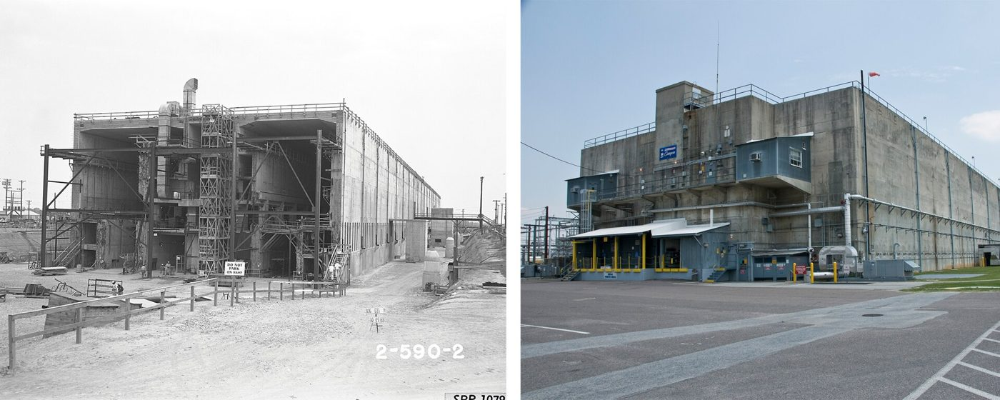
H Canyon, one of the two separations plants that were the main source of the plant’s early iodine releases, under construction in the early 1950s and in 2010. US Department of Energy photographs, public domain, via Wikimedia Commons.
A fuel failure in R reactor in November 1957 sent more than 1,900 curies of
radioactivity into a seepage basin dug only that year. In 1958 three
high-level waste tanks in H Area leaked through their steel walls (WB: CDC
Phase II ch. 5).
The final report judged the doses to people living nearby small, but found
that a child born in 1955 received much of a lifetime dose from the site in
its first years, from those early iodine releases (WB: CDC Phase
III).
On March 14, 1955, after a light rain, contamination across the plant set off
the shoe monitors of workers coming in from outside. The plant blamed fallout from a bomb test in Nevada two days before (WB: CDC Phase II ch. 6).
In 1985 Bernd Franke, a senior research fellow at the Institute for Energy and Environmental Research in Heidelberg, West Germany (WB: IEER), and Robert Alvarez argued that a reactor accident was the likelier source, since
the contamination centered on the K, L and P reactors (WB: CDC Phase II
ch. 6).
At Senator Thurmond's request, the staff of the Senate Armed Services
Committee investigated and reported in July 1986 that their case was "merely
speculative": the contamination matched fallout from Teapot Hornet, an
above-ground atomic bomb test at the Nevada Test Site two days before, and the
plant's own monitoring showed no release
(DL).
The CDC's contractor judged Nevada fallout highly probable, while noting that
the full extent of the deposit would never be known (WB: CDC Phase II ch.
6).
The workers' side of the reckoning came later still. In 2012 the government
added everyone who had worked at the site for at least 250 days between 1953
and 1972 to the Special Exposure Cohort of the federal occupational illness
compensation program. Their cancer claims no longer turn on reconstructing
each worker's dose (WB: NIOSH).
Outside the fence, the towns around the plant lived with both its paychecks and its releases; Living with the Plant tells how.
For the towns around it, the plant was an economic boom with an
environmental cost. It brought jobs, newcomers, new schools and federal
money. It also brought the radioactive releases
described earlier, and the damage to streams and wildlife told in
SRS and Ecology. Later chapters follow what that meant
for the people who fish the river and drink its water
(Chapter 3).
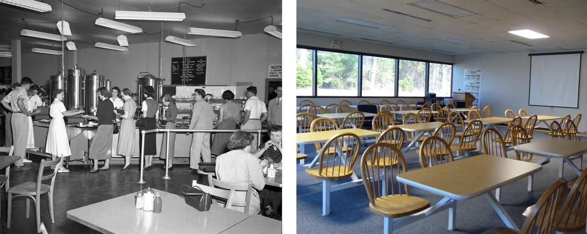
A site cafeteria in the 1950s and about 2010. Many workers have eaten lunch on the site since the plant opened. US Department of Energy photographs, public domain, via Wikimedia Commons.
The plant brought thousands of newcomers to a rural area. At a Senate hearing in Aiken in February 1952, the AEC's (Atomic Energy Commission's) local manager said there would be no government town like Oak Ridge or Richland; private builders would house the workers. He counted 3,000 trailers already in private courts, and new
classrooms paid for through the federal Office of Education
(DL: Senate hearing, 1952).
Aiken had 7,167 people in 1950 and told the same hearing it expected
metropolitan Aiken to reach 20,000 by 1955. It asked for federal help with
about $2.6 million of the $2.9 million in new water, sewer, police and fire
services it said it needed
(DL).
From 1954 the government paid Aiken, Barnwell and Allendale counties in place
of the property taxes the site's land no longer paid (WB: DOE,
2008).
A Labor Department study found more than 10,000 workers had moved into the
area by November 1951. School enrollment rose 69 percent in Williston, some
Barnwell County schools ran double shifts, and under segregation one town put
off building a needed school for Black children while it waited for federal
money (IA: Monthly Labor Review, 1952).
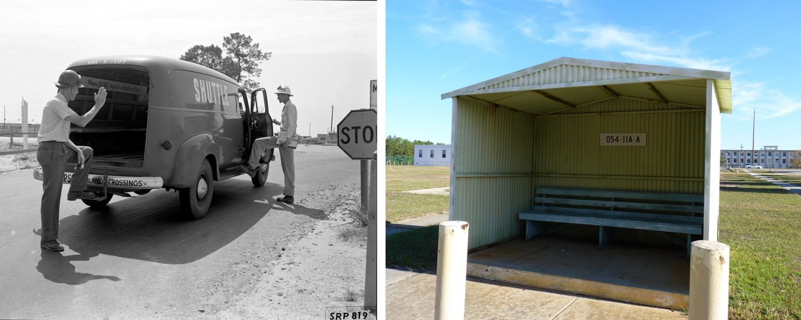
Getting to work: the plant's shuttle for workers who missed their carpools in the 1950s, and a carpool shelter still standing about 2010. US Department of Energy photographs, public domain, via Wikimedia Commons.
The plant also remade the roads around it. Before the plant, South Carolina Highway 28
ran from Augusta through Jackson and past Ellenton toward Allendale (IA: road
map,
1948;
WB: SRS at
Fifty).
In early 1951 the state reported that Routes 28 and 64 "will be closed through
the AEC area," while a new four-lane highway was built "from North Augusta, S.
C., to Route 28 at the outer boundary of the project" (DL: Senate hearing,
1951).
By 1954 that new road carried the number South Carolina Highway 125 (DL:
Federal Register,
1954),
and by 1955 the plant's newspaper placed a worker's home "in North Augusta on
Atomic Road" (WB: SRS at
Fifty).
Inside the fence the road was SRP Road A. On July 27, 1967, the Atomic Energy
Commission gave the state an easement to run Highway 125 for 18.3 miles
through the plant, which is how the public came to drive across it (DL:
Federal Register,
1968).
The plant changed the land as well as the towns. SRS and Ecology follows what happened to its forests, streams and wildlife.
Before the reactors ran, the river was surveyed. Ruth Patrick of the Academy
of Natural Sciences made a baseline survey in 1951 (WB: srs.gov
1950s), and the Public Health Service sampled the river's water
and its natural radioactivity in 1951–52
(IA;
IA).
In 1951 the AEC (Atomic Energy Commission) asked the University of Georgia and the University of South
Carolina to survey the land's plants and animals before construction began,
offering each about $10,000 a year (WB: SRS at Fifty ch. 17).
The Georgia team was led by Eugene Odum, whose 1953 textbook Fundamentals of
Ecology made him known as the "father of modern ecosystem ecology"
(WB: ch. 17;
IA;
IA).
Georgia's survey grew into a research program. Its Laboratory of Radiation
Ecology, with a staff of 15, exposed plants and animals to controlled doses of
radiation to learn what it does to them in the wild (WB: ch.
17).
The work became a permanent laboratory in 1961 (WB: srs.gov 1960s)
— the Savannah River Ecology Laboratory, run by the University of Georgia,
which dates its own founding to 1951 (WB: SREL). In the
1960s its scientists were, in the official history's words, "at the heart of"
the new idea of the ecosystem: what one is and how it works (WB: ch.
17).
The Savannah River Ecology Laboratory, early and about 2010. US Department of Energy photographs, public domain, via Wikimedia Commons.
Much of the land had been worked hard. When the government took it, about
two-thirds was forest, most of it already logged, and a third was cropland or
pasture (IA: SREL scientists, 2002). In 1952 the AEC and
the U.S. Forest Service agreed to manage the land together, and the Forest
Service's first job was planting trees "by the thousands" on old farms
(DL: Forest Service, 1995).
Replanting the land: open ground in the early years and the pine forest that grew on it, about 2010. US Department of Energy photographs, public domain, via Wikimedia Commons.
The site and its reactors changed the local streams and watershed. Lower Three Runs Creek was dammed in 1958
to make Par Pond, a cooling reservoir, and the reactors sent hot water down
creeks such as Steel Creek (IA: L-Reactor environmental impact statement, 1984).
Par Pond, the cooling reservoir built for P and R reactors, in 2020. Photograph by Dustin Lalonde, Savannah River National Laboratory, public domain, via Wikimedia Commons.
By the end of the 1960s the plant had done what it was built for. Its reactors
had made plutonium and tritium for more than a decade, and two of them had
already closed as demand fell (Running the Reactors).
Its land had also become a place to study, with forests replanted, ecologists
at work and a record of what it released. The 1970s brought new environmental
laws and a public that wanted to know more, and the plant came under scrutiny,
as Chapter 2 tells.
Through the 1970s the plant reported its releases. Du Pont's semiannual
monitoring summaries were reprinted in the federal Radiation Data and
Reports
(DL),
and its annual environmental reports run from 1974 on OSTI (Office of Scientific and Technical Information) (WB: OSTI
4174736). In 1972 the plant became the first National Environmental Research Park, land set aside for ecological research (WB: srs.gov 1970s); see
SRS and Ecology.
A health physicist makes a final radioactivity check on a shipping cask of californium-252 leaving the Savannah River Laboratory for Texaco’s laboratory in Bellaire, Texas, about 1970. US Department of Energy photograph HD.5A.047, public domain, via Wikimedia Commons.
Radioactive tritium was the plant's largest routine release, averaging more
than half a million curies a year to the air in 1974–77 (WB: OSTI
6206385). Single accidents added to it.
On May 2, 1974, some 479,000 curies of tritium gas escaped from a stack (WB:
OSTI 7100365), a release a Lawrence Livermore report on the
national emergency-response system's tracking of it called a small quantity,
not dangerous to the public (WB: OSTI 7282426).
In September 1984 another 43,800 curies, mostly tritium oxide, drifted
toward New Ellenton and Aiken (WB: OSTI 6417935), and on July
31, 1987, a further 172,000 curies were released (WB: OSTI
7130595).
Downstream, the plant tested the tritium in the drinking water every month at
the Beaufort-Jasper Water Authority in South Carolina and the Port Wentworth
plant in Georgia. It also screened the 865 deer and 8 hogs killed in its 1971
hunt for radioactive cesium-137 before releasing them to hunters
(DL).
The hunts still go on today; see Chapter
4.
The 1970s brought scrutiny of what the plant released. The 1980s brought a push for more plutonium, and with it the restart of a reactor, told in L-Reactor Comes Back.
The Reagan-era buildup of nuclear weapons needed more plutonium. In 1982 the
plant lowered the Pu-240 content of its product to blend with Hanford's (WB:
SRS at Fifty ch. 19), and DOE (Department of Energy) moved to
restart L reactor, idle since 1968, on an environmental assessment, a shorter
review, rather than a full environmental impact statement, the detailed public
study of a project's effects (WB: OSTI 5060401).
Plutonium production at the Atomic Energy Commission’s Savannah River Plant, about 1972. US Department of Energy photograph HD.6D.918, public domain, via Wikimedia Commons.
In February 1983 the Senate Armed Services Committee held a field hearing in
North Augusta (DL). There
Senator Mattingly of Georgia said his state was firmly against burying the
plant's high-level waste in the bedrock beneath the site. He warned it could
contaminate the Tuscaloosa aquifer, a deep layer of water-bearing ground that
he called the main source of water for Georgia.
DOE assured him it would not propose bedrock burial again
(DL). The Natural
Resources Defense Council's witness pointed to cesium contamination off the
site, just downstream of where Steel Creek enters the river
(DL). South Carolina and
Georgia had both opposed bedrock disposal
(IA).
The Natural Resources Defense Council sued. On July 15, 1983, the district
court held that restarting L reactor required an environmental impact
statement and ordered DOE to prepare one (WB: the court's
decision). It did not halt the restart. A law reporter's summary says the court refused to stop it in the meantime (WB: Environmental
Law Reporter); the decision itself put off South Carolina's request to do so until a later hearing.
DOE's environmental impact statement, which the court had required, came out
in May 1984. It chose to restart L reactor only after building a 1,000-acre
lake on Steel Creek to cool its hot water, instead of sending the water
straight into the creek as the draft had proposed. The lake would flood 225
acres of wetlands and 775 acres of uplands, and cost about $25 million (WB:
DOE, 1984).
L restarted in 1985. C reactor shut down that year, permanently from 1986
(WB: srs.gov 1980s). The Washington Post described
aging reactors carrying the buildup, one down for a cracked vessel — a
clipping that survives in the CIA's (Central Intelligence Agency's) files
(IA).
Critics outside the government read the record differently from Du Pont,
which ran the plant. Deadly Crop in the Tank Farm (1986), a report by
Makhijani, Alvarez and Blackwelder for the Environmental Policy Institute,
assessed the high-level waste tanks (WB: IEER); Du Pont published a rebuttal
(WB: OSTI 5881523).
While the reactors drew attention above ground, older waste was moving below it, as Under the Ground tells.
Under the Ground
What the plant had poured into its seepage basins came back through the
groundwater. Reviewing permit applications in 1981, South Carolina's health
and environment department judged that the volumes sent to the basins
strongly suggested groundwater problems; in 1983 the plant reported that a
well supplying drinking water to its own employees was contaminated, and two
more followed
(DL).
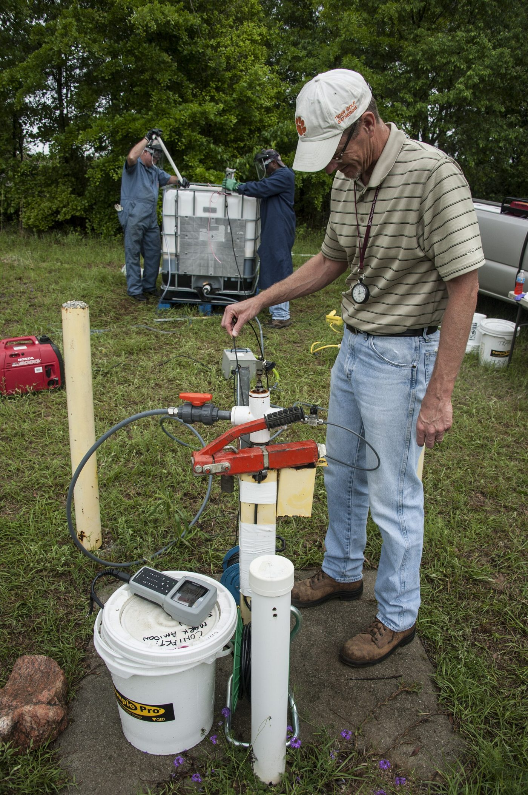
Site geologists sampling a groundwater well below the capped F Area seepage basin in 2013, where a treatment had been injected into the groundwater. US Department of Energy photograph, public domain, via Wikimedia Commons.
The department's deputy commissioner told Senator Glenn's committee in 1987
that plant staff had at first been reluctant to accept the state's
regulatory authority
(DL).
GAO (General Accounting Office) found solvents in the groundwater under the M Area fuel plant at more
than 30,000 times proposed drinking-water standards. Tritium at the
separations areas was more than 2,500 times the standard. DOE answered that
the contamination stayed under federal land and posed no threat to the public
(IA: GAO 1986).
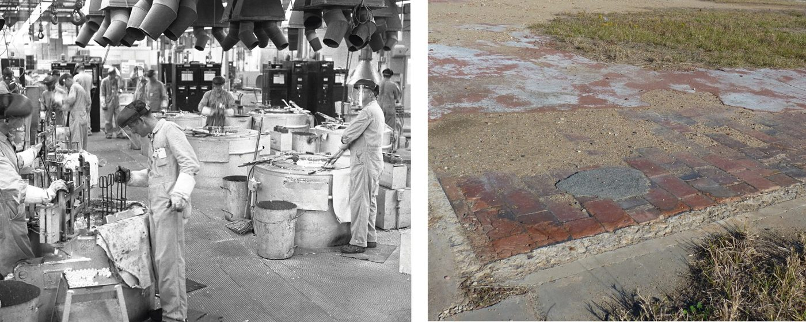
M Area, where the plant made its fuel and targets, in production and about 2010 after its buildings were torn down. US Department of Energy photographs, public domain, via Wikimedia Commons.
By 1991 the Office of Technology Assessment reported an EPA (Environmental Protection Agency) finding that the
pump-and-treat system meant to clean the M Area plume was not adequately
designed to reach its goal
(DL).
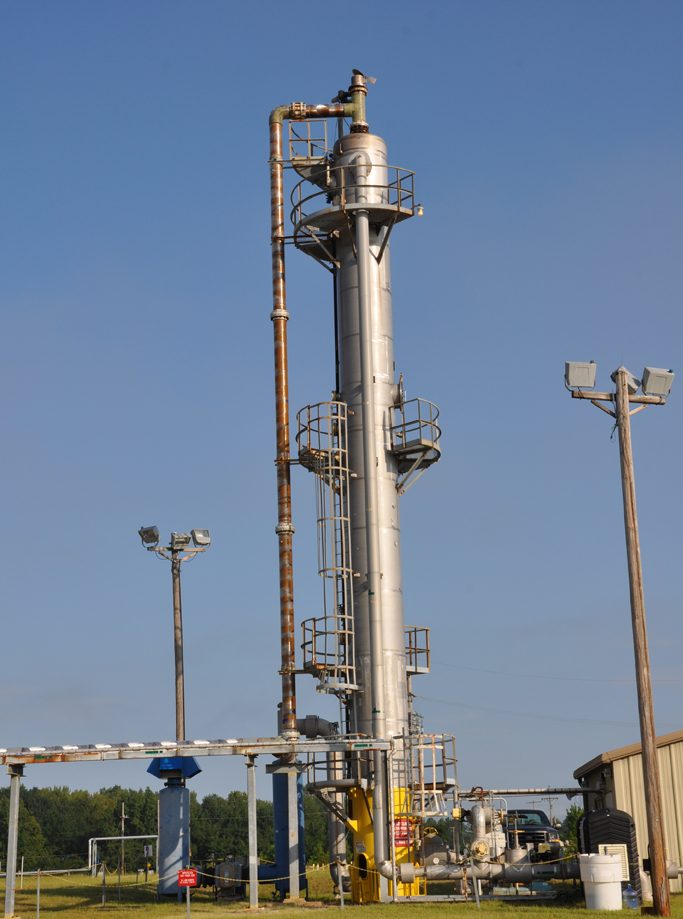
The M-1 air stripper, which by 2009 had pumped and treated more than five billion gallons of groundwater from A and M Areas. US Department of Energy photograph, public domain, via Wikimedia Commons.
By the late 1980s the reactors themselves were in trouble; 1987–1988: The Reactors Stop tells how they shut down.
A National Academy of Sciences panel reviewed safety at the defense
production reactors for DOE (Department of Energy) in 1987
(IA). Du Pont announced that
year that it would not stay on as operator (WB: srs.gov 1980s).
In February 1988 a Senate subcommittee heard DOE, the plant manager and
Du Pont on why L reactor's power had been cut
(IA).
That year an internal list of thirty significant reactor incidents became
public. G. C. Ridgely, a Du Pont technical supervisor and physicist, had dated
it August 14, 1985, under the title SRP Reactor Incidents of Greatest
Significance (WB: OSTI). He was one of 11 Du Pont scientists
and engineers who ranked the thirty incidents at the five reactors from 1957 to
1985 (DL: Congressional Record, 1988).
The official history presents the report as meant to show safety improving
(WB: ch. 19); the Senate investigator who obtained it remembers it
as evidence of concealment (WB: Alliance for Nuclear Accountability).
DOE's 1990 impact statement on running the reactors again summarized all
thirty in a table, and noted that seven had released radioactivity (IA: DOE,
1990, Table 4-15).
The reactors went down one after another — K in April, L in June, P in
August — over emergency cooling concerns (WB: ch. 19). On September
30, 1988, the General Accounting Office told Senator Glenn's and
Representative Synar's committees how P reactor's start-up had gone ahead
despite a reactivity shortfall (a chain reaction weaker than predicted) larger than any the plant had seen
(DL; WB:
gao.gov).
K reactor, one of the three that stopped in 1988, from the air in 2025. The building is now the K Area Complex. US Department of Energy photograph, public domain, via Wikimedia Commons.
Glenn's bill to put the weapons plants under outside safety oversight was already in hearings (DL).
On October 1, the day after the GAO testimony, the New York Times put the story on its front page.
It reported severe accidents at all five reactors, kept secret for up to 31
years.
They were documented in Ridgely's 19-page memorandum to his superiors at
Du Pont (WB: New York Times). The article's full text was
entered in the Congressional Record that month (DL).
The Times kept the story on its pages through the fall. On October 3 DOE
said that it, and the Atomic Energy Commission before it, had kept the
accidents secret over 28 years. It cleared Du Pont, which had reported them to
DOE's office in Aiken (WB: New York Times).
Energy Secretary
John S. Herrington promised to restart one reactor in January and all three by
late the next summer, since tritium decays at 5.5 percent a year and the weapons that use it need a fresh supply (WB: New
York Times).
By November the paper was asking how Congress had missed the signs (WB: New
York Times). In December DOE's own advisory committee of 12
engineers and scientists said K reactor should not restart until it was
checked against severe earthquakes. The same day the Natural Resources Defense
Council sued for a full study of the restart's effects on the environment and
public health (WB: New York Times).
Days later a crack was found in a pipe carrying coolant to K reactor (WB:
New York Times). A DOE report for Congress put the cost of
replacing old equipment and cleaning up across the weapons complex at $81
billion from 1990 to 2010 (WB: New York Times).
The shutdowns ended Du Pont's time at the plant, and soon the plant's old name, as A Name Change tells.
A Name Change
In April 1989 the Westinghouse Savannah River Company took over from Du Pont
(WB: ch. 19). The same year the Savannah River Plant became the
Savannah River Site and went on the National Priorities List, the Superfund list of the worst contaminated sites (WB: srs.gov
1980s). GAO's (General Accounting Office's) 1989 testimony set the site inside a complex-wide
picture of cleanup and modernization problems
(DL).
Plutonium produced at Savannah River each fiscal year, 1955–1988: 36.1 metric tons in all. From the Department of Energy’s Plutonium: The First 50 Years (1996), held by OSTI and preserved in Wayback; not in the Internet Archive’s collections. Public domain, via Wikimedia Commons.
GAO had warned in 1989 that DOE had only begun to address earthquake
weaknesses that had existed at the site for years. It also found that the
seismic review behind P reactor's 1988 restart used a less stringent standard
than the Nuclear Regulatory Commission's, the agency that regulates commercial
nuclear reactors (IA: GAO
1989).
DOE still meant to restart. In February 1991 it planned K for that summer and
L for 1992, at $3.2 billion for restart and operations (WB: GAO
RCED-91-95), and issued safety evaluations for K (WB: OSTI
5625511).
In March 1991 a depression was found on the downstream face of the Par Pond
dam. That summer the site lowered the reservoir about 19 feet. This exposed
some 1,300 acres of cesium-contaminated sediment and sent tritium and cesium
into the river (WB: OSTI 7247383). The exposed bed became a
Superfund interim action (WB: OSTI 10192315).
In December 1991 tritium from K reactor reached the Savannah River (WB: OSTI
5281815; WB: OSTI 10179303); a 1998 DOE notice
dates the same leak to 1992
(DL).
In 1992 K was started up for a test run and was then shut down permanently
(WB: srs.gov 1990s). Bomb making at Savannah River was over.
What it had released was reconstructed later. The CDC's (Centers for Disease Control and Prevention's) dose reconstruction
counted about 3,000 release incidents involving tritium between 1954 and 1992
(WB: CDC Phase II).
For the towns around the plant, these years of buildup and shutdown were felt in jobs and in worries about health; Living with the Plant follows both.
Living with the Plant
The plant was the area's anchor employer. A 1984 Energy Department report put
its permanent workforce at 9,200 in December 1982, most of them working for Du
Pont, with plant workers and their families making up about half of Aiken's
15,000 people.
The same report found that Aiken and Richmond counties ranked in the top half
nationally for income in 1974, while most counties around the plant ranked in
the bottom 11 percent (IA: DOE,
1984).
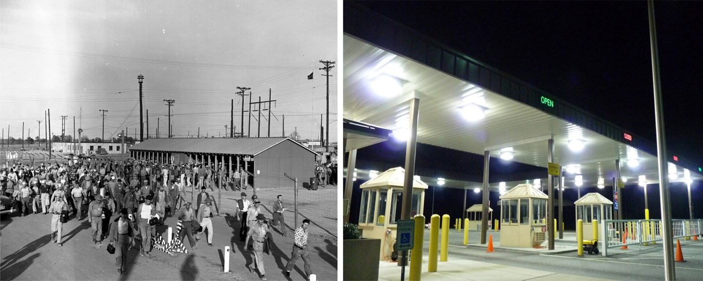
The plant's gates, then and about 2010. Du Pont trained its own guard force, and construction workers punched their time cards at similar posts. US Department of Energy photographs, public domain, via Wikimedia Commons.
The 1980s buildup brought the workforce to 18,635 by May 1989, and a 1990
DOE study said shutting the K, L and P reactors would cost about 9,600 jobs
(IA: DOE, 1990). In 1992 South Carolina listed Westinghouse
Savannah River, with 23,000 workers, as its largest manufacturing employer,
and noted that federal cutbacks had begun
(IA: South Carolina Economic Report, 1993).
The plant's neighbors and workers also raised questions about their health. In
August 1989 Senator Glenn argued that DOE's research on the health of its own
workers had been subordinated to production. Senator Kohl called for removing
the apparent conflict of interest, and said he was open to moving that
research to Health and Human Services.
The record included a 1988 study that reported a significant excess of
leukemia deaths among hourly Savannah River workers hired before 1955 (IA:
Senate hearing, 1989). The CDC (Centers for Disease Control and Prevention) later ran the dose reconstruction, the study that estimated what people around the plant were exposed to (WB: CDC).
Studies of the neighbors began at the same time. A July 1990 National
Institutes of Health survey compared cancer deaths in Aiken and Barnwell
counties and Georgia's Burke County with similar counties elsewhere. It found
no excess among children, more leukemia at ages 20 to 39 and slightly more
lung cancer in older adults, and said it did not show cancer excesses tied to
the plant (DL; DL).
A new environmental movement changed the rules for the plant. The National
Environmental Policy Act, signed in January 1970, required federal projects to
study their effects on the environment in public impact statements (WB: SRS
at Fifty, pp.
474–75).
In December 1970 a reorganization created the Environmental Protection Agency,
which took over the federal journal that reprinted the plant's radiation
monitoring
(DL).
In December 1974 the EPA issued the plant its first water-discharge permit
(WB: SRS at Fifty, pp.
480–81).
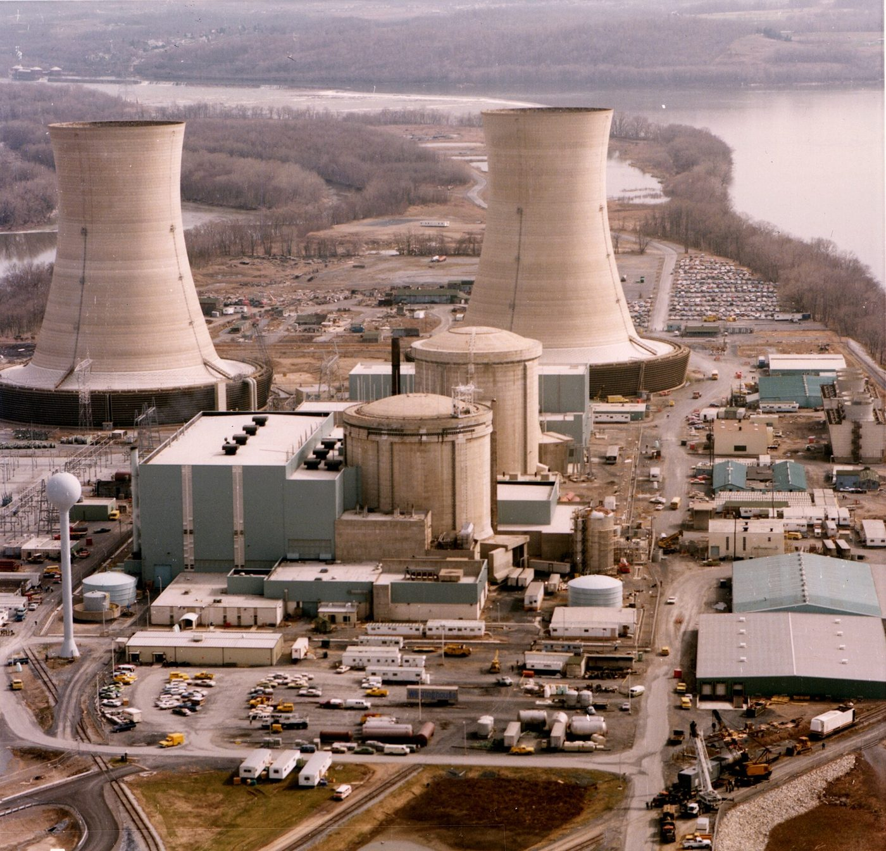
Three Mile Island, Pennsylvania, where a reactor partly melted down in March 1979. US Department of Energy photograph, public domain, via Wikimedia Commons.
By the late 1970s many environmentalists had also turned against nuclear
power. Near the plant their anger focused on two projects: a plant to recycle
plutonium from power-reactor fuel at Barnwell, built on land cut from the
site's eastern edge, and Georgia Power's planned nuclear plant at Waynesboro,
Georgia (WB: SRS at Fifty, pp. 482–83).
The Three Mile Island accident in Pennsylvania on March 28, 1979
(DL) gave the movement
new force. Small protests at Savannah River had come and gone through the
decade; the largest came that year. About 1,500 people joined a three-day
protest of seminars, marches and a concert by Graham Nash.
It ended with 162 arrests for trespassing at the plant, the Barnwell plant and
a nearby radioactive-waste dump, 30 of them at Savannah River (WB: SRS at
Fifty, p.
482).
The site dates its years of anti-nuclear protest from then (WB: srs.gov
1970s).
The Reagan-era buildup brought the protests to the plant's gates. In late May 1982, 500
to 700 people rallied near the plant for a freeze on nuclear weapons
(IA: Florida Flambeau, June 3, 1982).
The plant also reached a national audience on film. Building Bombs (1989),
made by Mark Mori and Susan Robinson, is a film about the environmental legacy
and social impact of the Savannah River Plant, “the nation’s largest
manufacturer of hydrogen bomb materials during the Cold War”, in the words of
PBS’s POV
(WB).
It was nominated for the Academy Award for Best Documentary Feature at the
63rd Academy Awards in March 1991 (WB:
oscars.org).
Public television did not show it at first.
In 1992 the cable series Alternative Views presented the film with an
interview with its co-director, saying PBS had refused to broadcast it (IA: Alternative Views #466). After three
years of argument and a campaign Mori organized, an edited version, retitled
Building Bombs: The Legacy, aired on POV on August 10, 1993 (WB: Los
Angeles
Times).
These protests ran alongside the official challenges told elsewhere in this
chapter: the lawsuit over restarting L reactor
(L-Reactor comes back) and the investigations of
1988 (1987–1988: the reactors stop).
The same years brought the damage to the site's land and wildlife into the open, as SRS and Ecology tells.
SRS and Ecology
In 1972 the site became the first National Environmental Research Park
(WB: srs.gov 1970s). The ecology laboratory's work on reactor
cooling water began in 1969, once satellite imagery had made the water
temperatures impossible to keep secret (WB: Ecological Society of
America), and became the Thermal Ecology symposia
(IA).
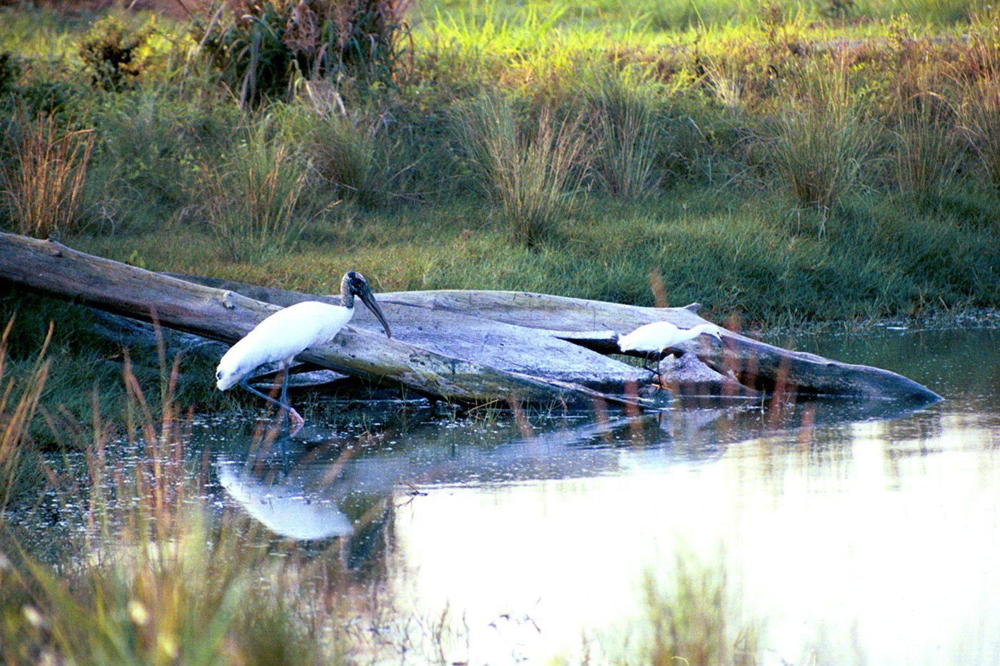
A wood stork. The species was listed as endangered in 1984, and storks fed near the plant's Steel Creek delta. Photograph by Tom MacKenzie, US Fish and Wildlife Service, public domain, via Wikimedia Commons.
The cooling water did real damage. A 1987 environmental impact statement
found that K reactor's hot water had altered 670 acres of forested wetland
along Pen Branch. C reactor's had altered about 1,147 acres, some 60 percent,
along Four Mile Creek, where open water and marsh had replaced hardwood forest
(IA: DOE, 1987).
Restarting L reactor meant sending hot water into the Steel Creek swamp again
(DL: Senate hearing, 1983).
Wildlife was in trouble too. In 1984 the wood stork was listed as endangered,
and the L-Reactor study recorded 102 of them feeding near the Steel Creek
delta the summer before (IA: DOE, 1984). In 1985 the site's
red-cockaded woodpeckers were down to four birds; at DOE's (Department of Energy's) request, Forest
Service scientists began carving artificial nest cavities and moving birds in
from other forests (DL: Forest Service).
When the reactors stopped for good in 1992, the plant that had made bomb materials for almost four decades turned from production to cleanup. Chapter 3 follows that turn.
The official history marks the turn plainly: the mission became environmental
management, not production (WB: SRS at Fifty ch. 20). DOE (Department of Energy)
priced the complex-wide legacy in Estimating the Cold War Mortgage
(IA) and traced each waste
stream to the process that made it in Linking Legacies
(IA). In October 2003
the last spent fuel left the receiving basin, closing what the site called a
forty-year era (WB).
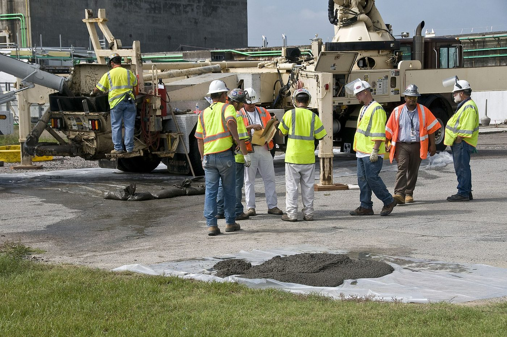
A cleanup crew at work in 2010, when federal stimulus money paid to speed up the site’s cleanup. US Department of Energy photograph, public domain, via Wikimedia Commons.
Even before then, spent fuel was arriving as well as leaving. The United States moved to take
back the fuel it had supplied to research reactors abroad. In 1994 GAO (General Accounting Office)
reported that delays had already led reactors in Belgium and Germany to
reprocess theirs, and that DOE meant to store the first returns at Savannah
River (IA: GAO 1994).
DOE's 1996 decision accepted about 22,700 fuel elements from 41 countries
over 13 years, most landing at the Charleston Naval Weapons Station, with
the aluminum-based fuel all managed at Savannah River (DL: Federal
Register,
1996).
South Carolina's governor took DOE to court over it
(DL).
The biggest part of that cleanup was the liquid waste stored in the tank farms, the subject of The Tanks.
The Tanks
The largest legacy was liquid: about 36 million gallons in 49 tanks, roughly
421 million curies (WB: DWPF fact sheet). The Defense Waste
Processing Facility, built from 1983 and troubled before it ran
(IA: GAO 1992), began turning
that waste into glass on March 12, 1996 (WB).
The Defense Waste Processing Facility, the glass plant, in 2009. US Department of Energy photograph, public domain, via Wikimedia Commons.
Getting the waste into the glass plant was harder. In 1983 DOE chose a
process called In-Tank Precipitation to pull radioactive cesium out of the
tanks' salt. It was expected to cost $32 million and be finished by 1988.
After about a decade and almost half a billion dollars, it was abandoned in
1998 because it gave off large amounts of benzene (DL: House hearing,
2000; WB:
GAO).
Its replacement, the Salt Waste Processing Facility, was to be built by 2008
for $900 million; in 2015 DOE's Inspector General reported about $1.4
billion in cost growth and a start no earlier than December 2018 (WB: DOE Inspector General). The glass plant poured its 4,000th canister on December 31,
2015, of about 8,000 expected (WB).
Tanks 17 and 20 were emptied and closed in 1997, the first in the nation
(WB). What could be left in the ground was settled by Section
3116 of the 2005 defense authorization act (WB: govinfo). Senator Lindsey Graham said he wrote the section, which passed by a single vote (WB), and the National Academies later reviewed it for Savannah River (IA). Tanks 18
and 19 followed in 2012 (WB).
In 2018 and 2019 DOE reinterpreted "high-level waste" to turn on how
radioactive a waste is rather than where it came from, revising the change
after objections from the Nuclear Regulatory Commission, members of Congress
and states.
Savannah River was its first test: in 2020 DOE decided to send grouted
wastewater from the glass plant to a commercial disposal site in Andrews,
Texas, beginning with 8 gallons (WB: Federal Register; WB:
Federal Register).
The reactors that had made the waste were coming to their own end, told in Sealing the Reactors.
In March 2008 the site put up South Carolina historic markers for P and R,
the first inside the fence (WB). Then federal stimulus money from the 2009 Recovery Act arrived.
The five reactor areas from the International Space Station, January 28, 2006, with L Lake and Par Pond, the reactors’ cooling reservoirs. NASA astronaut photograph ISS012-E-16633, labels by NASA Earth Observatory; public domain, via Wikimedia Commons.
Deactivation of the R reactor building was cleared in March 2009
(WB); the reactors were sealed in place between October 2009 and
September 2011 (WB: OSTI 1032952), five years ahead of the
schedule without the stimulus (WB). The release marking the
end of that work is gone from srs.gov; the Wayback capture is the copy
(WB).
Even as the reactors were sealed, plutonium kept coming to the site and leaving it, as Plutonium: MOX and Pits tells.
Plutonium: MOX and Pits
MOX (mixed oxide fuel) was a plan to turn surplus weapons plutonium into fuel
for commercial nuclear power reactors, so it could no longer be used in bombs
(DL: House hearing,
2006). South
Carolina's fight over radioactive plutonium began before MOX. In April 2002
DOE (Department of Energy) decided to store surplus plutonium from Rocky Flats, a weapons plant in Colorado,
at Savannah River.
Governor Jim Hodges vowed to lie in the road to stop the shipments (IA). He sued, then issued an executive order banning plutonium from the state's roads, and in June a federal court barred him from
interfering with the shipments; the Fourth Circuit found that DOE had not
broken environmental law (DL: Hodges v. Abraham).
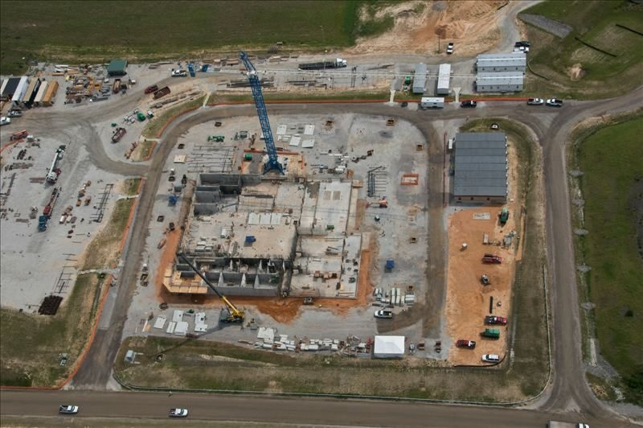
The MOX plant under construction in 2010. It was never finished. US Department of Energy photograph, public domain, via Wikimedia Commons.
Congress spent a decade on turning surplus plutonium into reactor fuel at
Savannah River
(DL;
DL). DOE's
2016 baseline put the mixed-oxide plant at $17.17 billion, finished in 2048
— a document since removed from the watchdog site that posted it (WB: SRS
Watch).
South Carolina sued to hold the government to its promises (WB:
complaint), and The Post and Courier's source documents on
the fight are on archive.org
(IA).
In May 2018 DOE certified that diluting and disposing of the plutonium would
cost less than half of finishing MOX; the Fourth Circuit, the federal appeals court for the region, lifted the injunction that had kept the project alive on January 8, 2019 (WB: 4th
Cir.).
By then the contract was already over. A Notice of Termination from DOE's
National Nuclear Security Administration, dated October 10, 2018, ended the
contract to design, build and operate the plant, effective immediately (WB:
NRC, 2019). Construction stopped on October 12, and in February
2019 the Nuclear Regulatory Commission terminated the plant's construction
authorization (WB: NRC, 2019).
MOX workers had already been offered a job fair in December 2018
(WB). By August 2019 DOE reported a metric ton of plutonium
removed from the state (WB: SC Attorney General). Half of that ton
had gone, secretly, to Nevada.
DOE announced in August 2018 that it planned to send up to a metric ton
there; Nevada sued, and learned through the suit that DOE had already
shipped half of it while seemingly negotiating in good faith. In a 2020
settlement DOE agreed to remove that half ton from Nevada by the end of 2026
and to send no more (WB: Nevada Attorney General).
The site was also offered other countries' material. In 2014 DOE began
assessing whether to take Germany's spent pebble-bed reactor fuel: graphite
spheres containing American-supplied highly enriched uranium (WB: Federal
Register). The site's own Citizens Advisory Board voted against
it in 2017 (WB: CAB). By 2022 the German state concerned had
chosen to store it at home instead (WB: SRS Watch).
Plutonium from a Japanese research assembly did come, through Charleston in
2016 (WB: SRS Watch). In 2021 NNSA (National Nuclear Security Administration) dropped its plan to send
it on to New Mexico. It decided instead to process the plutonium at Savannah
River and store it there until a geologic repository exists (WB: Federal
Register).
The site's weapons work never fully ended. Work with radioactive tritium continued
throughout (WB).
In 2019 the Defense Nuclear Facilities Safety Board warned that a fire,
crane drop or explosion in the tritium facilities could cause acute
radiation sickness or death in a significant number of people (WB: Federal
Register). NNSA's administrator replied, "I do not accept
Recommendation 2019-2" (WB: Federal Register).
The people who had worked with that material were still counting the cost; Sick Workers follows them.
Compensation for the plant's sick workers came slowly. At a 2003 House
hearing Representative Charlie Norwood of Georgia said more than 300 of his
constituents had filed claims over work at the site, and only a handful had
a decision. The building trades' statement said Savannah River workers were
treated unfairly under the program (DL: House hearing,
2003).
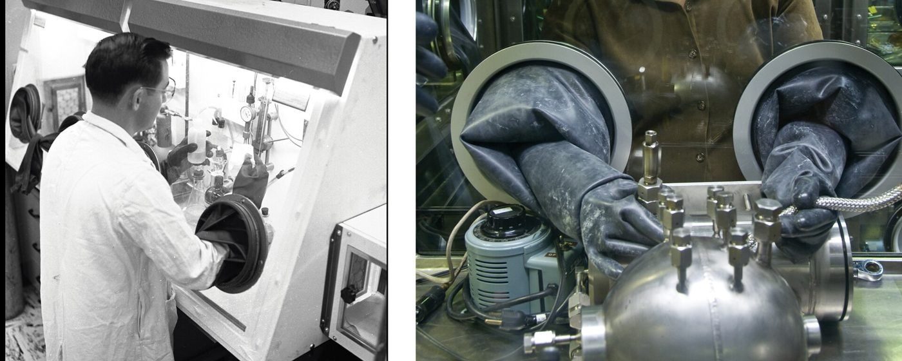
Glove boxes, then and about 2010: sealed cabinets for handling radioactive material through built-in gloves. US Department of Energy photographs, public domain, via Wikimedia Commons.
Studies of the workers kept finding leukemia. A 1995 Oak Ridge study found
that the site's workers died at lower rates than the general public but had
significantly more leukemia (WB: site epidemiology summary).
In 2007 NIOSH (National Institute for Occupational Safety and Health)-funded
researchers following 18,883 workers hired from 1950 to 1986 found leukemia
risk rising with recorded radiation dose, and excess cancer of the lung
lining, often linked to asbestos (WB: NIOSH).
The records behind the claims had gaps. In 2007 NIOSH found that the site
had not sent neutron radiation data for some claims (WB: NIOSH).
That November a petition asked to add every worker from 1950 to 2007 to the
Special Exposure Cohort; the special classes for the site came from it
(WB: NIOSH).
The first, in 2012, spared early workers individual dose reconstruction; it
was extended in 2021 to subcontracted construction workers through 1990 (WB:
Federal Register) and in 2026 through 1993 (WB: Federal
Register).
The Medical University of South Carolina ran a cancer and birth-defects
registry from 1991 to 1995 for the counties around the site and down the
river to Savannah. Some cancers were elevated, among them cervical cancer in
Black women and esophageal cancer in Black men, but officials saw no sign
they were related to the site (WB: 2002 summary).
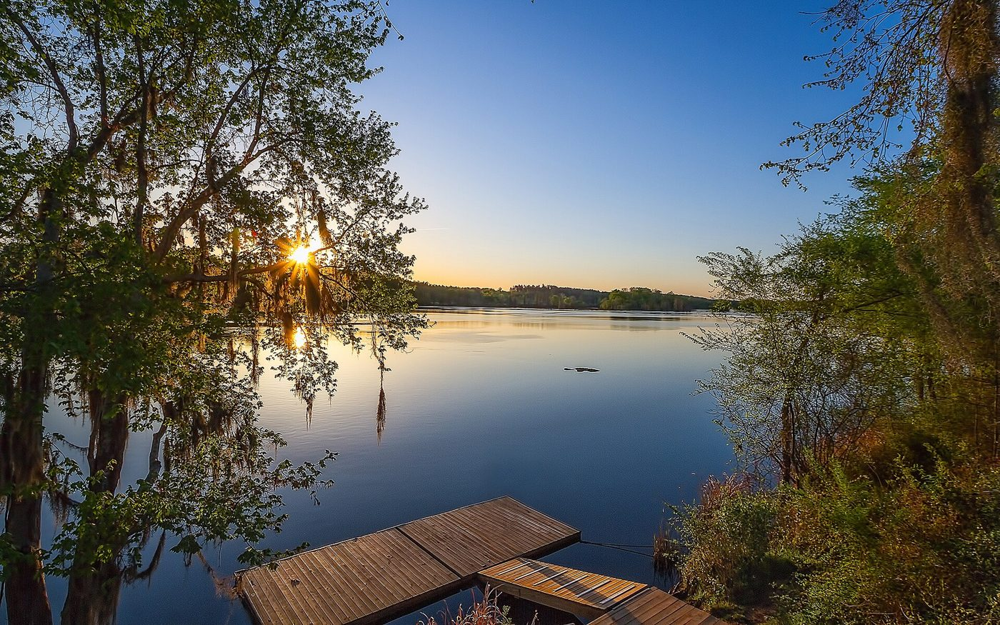
The Savannah River from the Georgia side. Photograph by Steve Rich, Savannah River Nuclear Solutions, public domain, via Wikimedia Commons.
In 2007 the federal Agency for Toxic Substances and Disease Registry (ATSDR)
found "no apparent public health hazard" from groundwater or surface water
leaving the site (WB: ATSDR). An advocacy group, the Radiation
and Public Health Project, disagreed in 2012, reporting that 46 of 48
radiation-sensitive disease measures in five nearby counties had risen
faster than national rates (WB: advocacy report).
Fishing on the site itself and some surrounding areas is prohibited, with
warning signs posted. A 1997 survey of 258 people fishing the river near the site found
they ate about 3.2 pounds of fish a month, Black men nearly twice as much as
white men, and that families shared the catch with young children
(WB: ATSDR).
In 2012 ATSDR found no harmful radiation from eating local crops, livestock
or game. It warned that eating a lot of largemouth bass, bowfin and catfish
could raise mercury risks, especially for pregnant women and children.
Mercury is high upstream of the site too, and ATSDR said the site's share "is
not known" (WB: ATSDR).
The neighbors also depended on the site for jobs, and those jobs were shrinking, as Living with the Plant tells.
In the 1990s budget cuts came, hitting the plant and, through it, the local economy
and community. The site employed 23,351 people in 1992, about 10 percent
of all jobs in six surrounding counties, with a payroll above $1.1 billion,
and a 1995 DOE (Department of Energy) study warned that budget cuts could remove up to 4,200 more
jobs (IA: DOE, 1995).
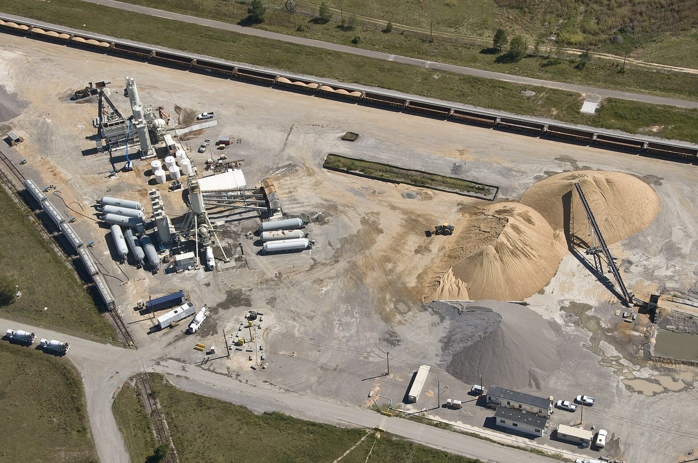
A local Aiken County company at work in 2010 on a federally funded contract to close the P Area ash basin. US Department of Energy photograph, public domain, via Wikimedia Commons.
A study for the SRS (Savannah River Site) Community Reuse
Organization, a regional development group with an interest in the site's
value, counted 25,180 workers in September 1991 and 10,967 in September 2010
(IA: study for the SRS Community Reuse Organization, 2011).
The counts differ by source.
The government's payments in place of taxes became a fixture. In 2008 DOE
raised them from $3.5 million to $6.2 million a year (WB: DOE).
GAO (Government Accountability Office) later found that Barnwell County received about $4.5 million of the
$6.2 million paid in 2013, and that the land values behind the payments had
been set in 1988 (WB: GAO, 2019).
As the workforce shrank, the land recovered; SRS and Ecology follows it.
The land recovered. By 1994 the Forest Service reported the site's
red-cockaded woodpeckers had grown from 4 to 77 birds in nine years; it was
restoring drained Carolina bays, round wetlands found across the region, and
planting longleaf pine (DL: Forest Service, 1995).
A red-cockaded woodpecker feeding its young at a nest in a longleaf pine in Georgia. US Fish and Wildlife Service photograph, public domain, via Wikimedia Commons.
The work to repair the land continued. Ecology laboratory scientists wrote in 2002 that cooling water had "destroyed
the floodplain forests" along several streams, and that after the reactors
shut down they were studying how to replant Pen Branch and Four Mile Creek.
The site then held 30 set-aside research areas of 14,005 acres, and 152
woodpeckers by 1999 (IA: SREL scientists, 2002).
The science done on the site went on, though not all of it was safe from budget cuts, as The Laboratories tells.
The site's laboratory was named the country's newest national laboratory, the Savannah River National Laboratory, in
2004 (WB). The ecology laboratory fared worse. Its grant was cut
47 percent for 2006, with layoffs that September (WB: UGA); the
next year's funding fell to $1 million against an expected $4.5 million, which
the site's own Citizens Advisory Board called reprehensible (WB: SRS
CAB).
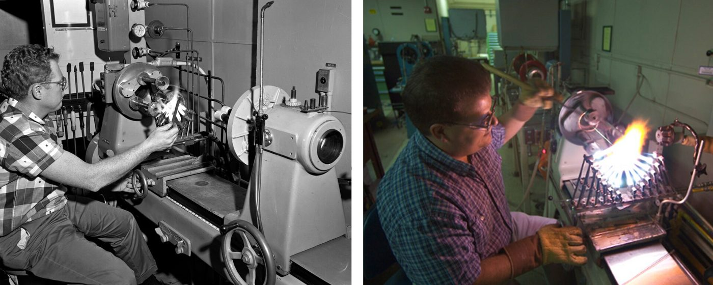
The laboratory's glass shop, which has made glassware for research since 1953, then and about 2010. US Department of Energy photographs, public domain, via Wikimedia Commons.
The House Science Committee held a hearing on it in July 2007
(DL; video
IA).
SREL's (Savannah River Ecology Laboratory's) web page from that summer mentions a statement on a budget crisis
(WB) but the actual statement has been lost.
By the 2000s the site's own history had become something to preserve, the subject of The Plant's Museum.
The SRS (Savannah River Site) Museum opened in Aiken after a 2014
ribbon-cutting (WB). It is still open to the public. In
November 2026 its website listed free admission, Wednesday through Saturday
from 10 a.m. to 4 p.m., at 224 Laurens Street SW, run by the SRS Heritage
Foundation (WB: SRS Museum, 2026).
The museum's first website is gone, but the Wayback Machine has it
(WB). The site's archaeologists, whose program collected Ellenton's memories from 1990, and its Cold War historic preservation program work with it (WB).
The opening of the SRS Museum in Aiken, October 2014. US Department of Energy photograph, public domain, via Wikimedia Commons.
The federal record of historic engineering holds one part of the plant in
detail. The Historic American Engineering Record documented the Physics
Assembly Laboratory in M Area in 107 photographs and 123 data pages. It was
home to the zero-power Process Development Pile, which set the physics for
plutonium and tritium production in the five reactors
(WB: Library of Congress, HAER SC-43).
After nearly three decades of cleanup, the site is turning back toward weapons production while the cleanup goes on. Chapter 4 follows both.
The site's weapons work is growing again. DOE (Department of Energy) decided
in November 2020 to make pits, the radioactive plutonium cores of nuclear
weapons, at Savannah River (WB: Federal Register), and SRS
(Savannah River Site) Watch and others are challenging the decision in federal
court (DL).
The site of the plutonium pit plant in F Area, January 2025. US Department of Energy photograph, public domain, via Wikimedia Commons.
The plant is being built by repurposing an unfinished concrete structure on
the site (WB: SRS). In 2022 NNSA (National Nuclear Security
Administration) told Congress the site would not reach 50 pits a year until
sometime between 2032 and 2035, not the 2030 target (IA: Congressional
Research Service). In 2024 its
builders were still promising it by 2032 (WB: SRS).
In January 2023 GAO (Government Accountability Office) found that NNSA had no
complete schedule or full cost estimate for pit production, and counted at
least $18 billion to $24 billion in potential costs across its two pit sites, Los Alamos in New Mexico and Savannah River (WB: GAO).
By February 2026 GAO reported the main building's possible cost at over $22
billion, up from a preliminary $6.9 billion to $11.1 billion, with completion
in September 2035 at the earliest (WB: GAO 2026).
NNSA's own review of 2025 said its contractor had "underperformed" on the
project and been "negligent in reporting project slips" (WB:
NNSA). On October 15, 2026, DOE approved the plant's baseline and
authorized full construction (WB: NNSA).
Safety for the workers inside is a live question. In August 2023 the Defense
Nuclear Facilities Safety Board warned that the planned controls "may not
adequately protect facility workers" handling plutonium in glove boxes
(WB: safety board). In May 2025 the board said NNSA's upgrades
were "a significant improvement to safety" and resolved its concerns
(WB: safety board).
New plutonium work also means dealing with the plutonium already there, as Moving Plutonium Out tells.
South Carolina won a deal over the plutonium shipped in for the MOX (mixed oxide fuel) plant.
On August 31, 2020, DOE (Department of Energy) agreed to pay the state $600 million and to remove
9.5 metric tons of plutonium by 2037; without the deal, DOE expected removal
to take until 2049 (WB: DOE).
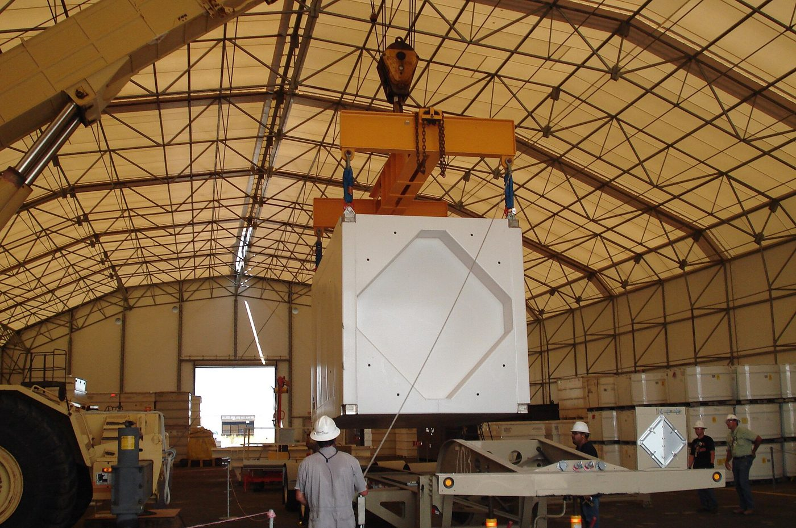
A TRUPACT-III shipping container for radioactive waste being handled at the site in August 2011, before the first such shipment to the Waste Isolation Pilot Plant in New Mexico. US Department of Energy photograph, public domain, via Wikimedia Commons.
Removal works by "dilute and dispose": plutonium is mixed with other
material, packed in drums and shipped to the Waste Isolation Pilot Plant in
New Mexico. The site expects tens of thousands of drums over three decades
(WB: SRS). In 2025 NNSA (National Nuclear Security Administration) said its contractor had beaten its
targets for diluting plutonium and for shipments (WB: NNSA).
Then the policy changed. A May 2025 executive order told DOE to halt dilute
and dispose, except what it owes South Carolina, and to offer surplus
plutonium to industry as reactor fuel (WB: Federal Register). In
March 2026 DOE said it would restart HB Line, a plutonium processing plant at
H Canyon shut down a few years earlier, to recycle plutonium into reactor fuel
(WB: American Nuclear Society).
The oldest job on the site, emptying the tanks, is not finished either; Emptying the Tanks follows it.
A new contractor, Savannah River Mission Completion, took over the liquid
waste in February 2022 (WB: DOE), and DOE (Department of Energy) set a goal of
closing both tank farms by 2037 (WB: DOE). The Salt Waste
Processing Facility, years late, began radioactive operation in fall 2020
and passed 10 million gallons by November 2024 (WB: SRS).
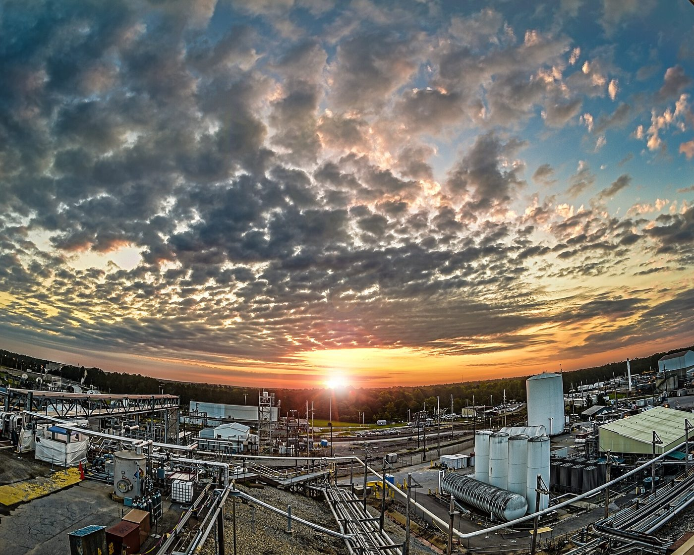
H Tank Farm, where liquid radioactive waste is stored in underground tanks. US Department of Energy photograph, public domain, via Wikimedia Commons.
The glass plant passed 4,500 canisters by its thirtieth anniversary in 2026
(WB), and in May 2026 Tank 14 became the eighth old-style tank, one of the older designs that do not meet state rules for secondary containment (WB: SRS fact sheet), to reach the end of waste removal in under two years (WB). Still,
only 8 of the 51 tanks are formally closed, and about 32 million gallons of
waste remain in the other 43 (WB: DOE).
H Canyon, the site's chemical separations plant, was set to wind down. In 2022
DOE decided to dissolve its remaining spent fuel without recovering the
uranium, emptying L Basin, the pool in L Area where spent fuel is stored, by 2033 instead of 2060 (WB: SRS).
In February 2026 DOE reversed course and restored uranium recovery, so H
Canyon can make fuel for advanced reactors (WB: DOE). The
site's Citizens Advisory Board has asked for briefings on what the restart
means for the environment (WB: SRS Citizens Advisory Board).
All of this work is divided among agencies and contractors, as Who Runs the Site explains.
The government has always owned the site, and companies have run it for
the government. The Atomic Energy Commission owned it until 1975, when the
commission was disbanded; its work passed to the Energy Research and
Development Administration and then, in 1977, to the new Department of Energy
(WB: SRS at Fifty).
Du Pont ran the plant from 1950 until Westinghouse took over in 1989
(WB: ch. 19). By 1999 the Westinghouse Savannah River Company was owned by Washington Group International (WB: SRS at Fifty). The site's timeline dates its new name, Washington Savannah River Company, to that purchase (WB: srs.gov 1990s); its annual reports kept the Westinghouse name until 2005 (WB: 2004; WB: 2005).
In 2008 Savannah River Nuclear Solutions took over management and operations
from Washington Savannah River Company
(WB: SRS, 2008),
and in 2009 Savannah River Remediation took over the liquid waste, which
Washington Savannah River Company had run "for nearly two decades"
(WB: SRS, 2009).
The 2020s brought more changes.
The laboratory now stands on its own. In December 2020 DOE (Department of
Energy) gave Savannah River National Laboratory a separate contract, run by
Battelle Savannah River Alliance (WB: DOE).
On October 1, 2024, NNSA (National Nuclear Security Administration), the
weapons agency, became the site's landlord, with the cleanup office as its
tenant; the site then had a budget of about $3.8 billion a year and about
13,400 workers (WB: SRS).
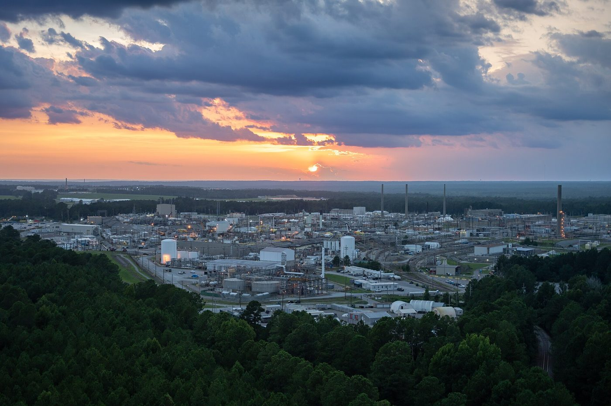
H Canyon and the buildings around it from the air, July 2024. US Department of Energy photograph, public domain, via Wikimedia Commons.
Worker safety is still in the news. In April 2024 DOE proposed a $127,440
penalty against the main contractor after a worker lost two fingers in 2022
(WB: DOE), and in August 2026 NNSA cited it again over a
thumb amputation in 2025 (WB: DOE).
On October 28, 2026, a fire at Savannah River National Laboratory led the
site to declare a Site Area Emergency and close its gates to incoming
traffic. The emergency ended that night, and the site said surveys found "no
detectable levels of contamination" (WB: SRS). Its own
releases give two different times for when the emergency was declared
(WB: SRS).
Payments to the site's sick workers keep growing. Labor Department figures
show $271 million in compensation and medical bills by November 2008
(WB: Labor Department), $1.02 billion by December 2016
(WB) and $2.23 billion for 13,090 workers by April 2024
(WB). The current page lists about $3.06 billion for about 15,400
workers (WB: Labor Department).
Most cancer claims still turn on an estimate of each worker's radiation dose,
and most of those fail. After NIOSH (National Institute for Occupational
Safety and Health) estimated the dose, 2,271 of the site's cancer cases were
accepted and 4,025 denied, and another 483 were still waiting (WB: Labor
Department).
In April 2026 the federal advisory board's Savannah River work group noted
that a 1997 contractor check had found 79 percent of special bioassays, the
samples that show whether a worker took in radioactive material, were never
turned in. Its review of the main contractors' own employees was "still under
consideration" (WB: NIOSH advisory board).
Tritium is still most of what the site sends into the river. In 2024 the
site released 451 curies of it, and Georgia Power's Vogtle nuclear plant
released 1,628. Below the site the river averaged 377 picocuries per liter, a measure of radioactivity in water,
against a federal drinking-water limit of 20,000. The site put the most anyone
downstream could get from drinking the water at 0.034 millirem a year, about
a third of it from the site (WB: SRS).
South Carolina keeps its own watch, paid for by Energy Department grants. Its
program samples drinking water that serves about 254,000 customers, and warns
downstream water suppliers if tritium in the river passes trigger levels
(WB: South Carolina; WB). In 2023 every drinking-water
result was below federal limits, but tritium was still "the most abundant
radionuclide" found (WB: South Carolina, 2023).
A great blue heron at Phinizy Swamp Nature Park, a wetland on the Savannah River at Augusta. Photograph by Eric Monaco, Savannah River Remediation, public domain, via Wikimedia Commons.
The towns around the site still live with it, too; Living with the Plant follows them.
The payments in place of taxes still matter to the neighbors. In 2021, when the federal budget request for 2022 cut $5.7 million from them, Representative Jim Clyburn asked
for the money back, and a Barnwell County council member called the payment
"sort of like the sacred cow" (WB: Aiken Standard, 2021).
South Carolina's 2022–23 budget spent $525 million it listed as coming from the Savannah River Site litigation, including $105 million for new schools for Williston and
Blackville (WB: South Carolina budget, 2022).
The first pitch at the site's United Way softball tournament, November 2023. US Department of Energy photograph, public domain, via Wikimedia Commons.
A state highway still crosses the site; its history is told in
Chapter 1, Living with the Plant. South Carolina Highway 125, known
along the way as Atomic Road, runs for about 17 miles across it between
Allendale and Jackson: the site's directions for its public deer hunts send
drivers from Allendale north through the site on it (WB:
SRS; WB: Historical Marker
Database).
In 2021 the state transportation department widened and repaved about 8 miles
of it inside the site (WB: DOE). It is a road to drive
through, not to stop on. The site's impact statements limit the public to
"through traffic only" on Highway 125, U.S. Highway 278 and SRS Road 1. DOE
controls access to the highway inside the site and can stop traffic and clear
everyone off it quickly after an accident nearby (IA: DOE,
1990).
Site workers still give to local charities. The contractors reported raising
$1,488,038 for United Way in the 2023 campaign (WB: SRS release),
and the United Way of Allendale, Bamberg and Barnwell counties called the
workers' gifts "a significant portion" of its budget
(WB: contractor release, 2026). Both are the contractors'
own announcements.
The land carries the site's history too, the subject of Ecology and the SRS.
The land the plant took is now a large managed forest, and that is the good
news. The Forest Service still runs it for DOE (Department of Energy).
In 2021 it thinned more than 3,000 acres, burned about 24,000 acres under
control to keep the forest healthy, and sold timber from it. The red-cockaded
woodpeckers kept coming back, from 3 active groups in 1985 to 150 in 2021, and
golden eagles were seen on the site (WB: Forest Service, 2021).
The ecology laboratory restored wetlands for the rare gopher frog in 2021
(WB: DOE), and in 2023 released the young of box turtles
seized from illegal collectors (WB: DOE). The forest even
helps with cleanup: a Forest Service project uses trees to draw off water
contaminated with radioactive tritium, about 9.5 million gallons in 2021 (WB:
Forest Service).
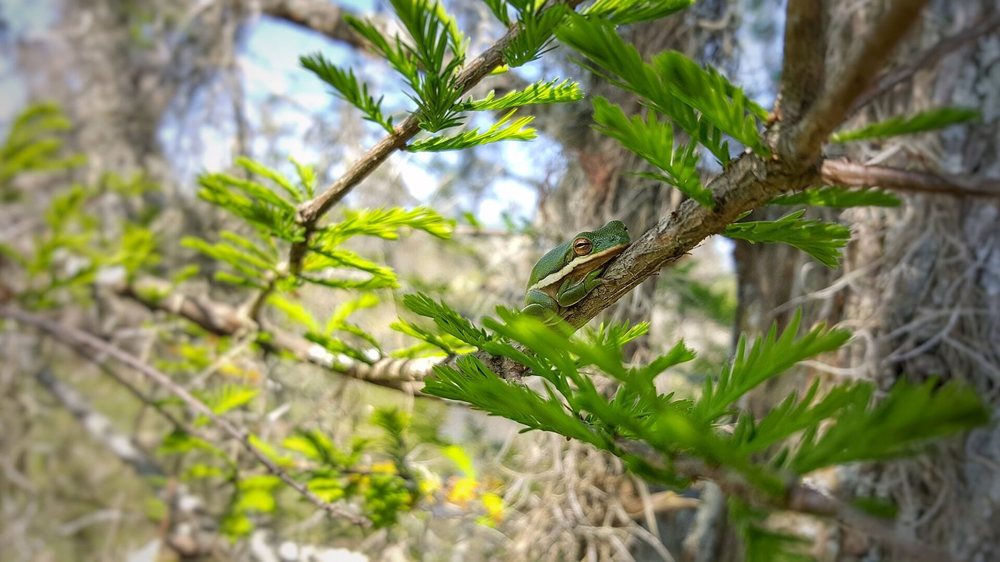
A green tree frog on a swamp cypress at the site. Photograph by Amanda Hurst, Savannah River Ecology Laboratory, public domain, via Wikimedia Commons.
The bad news is that the plant's radioactivity is still in its animals. The
site's deer hunts, open to the public every autumn since 1965, are still held,
and every deer and hog killed is taken to a check station and tested for
radioactive cesium-137 before the hunter can keep it.
The site's limit is a radiation dose of 22 millirem a year to the hunter (WB:
SRS, October 2026). Earlier rules said no animal is released
if its radioactive cesium would put the hunter over the site's yearly
radiation limit (WB: srs.gov hunt rules).
The site and its creeks stay closed to the public, fishing included. In 2021
the Forest Service replaced the trespass warning signs along thirty miles of
the site's boundary on the Savannah River (WB: Forest Service).
Some fish below the site still carry radioactivity. South Carolina still
advises people not to eat bowfin from the river below Stevens Creek, and notes
that some fish contain radioactive cesium-137 and strontium-90 (WB: South
Carolina advisory).
Georgia sets no fish limits for radioactivity, judging its mercury limits protective enough (WB: Georgia guide). The site estimated that
someone eating fish from its creek mouths in 2024 would get at most about 0.24
millirem of radiation, all from cesium-137 (WB: SRS).
What comes next for the site is already being planned, as Looking to the Future tells.
Much of the site's future is already planned. In 2024 it had a budget of about
$3.8 billion a year and about 13,400 workers (WB: SRS).
Its largest new project, the plant to make plutonium pits, was estimated in 2026 at over $22 billion, finished no sooner than September 2035 (WB: GAO
2026).
DOE (Department of Energy) has promised to remove 9.5 metric tons of plutonium
from South Carolina by 2037 (WB: DOE), and its cleanup
contractor is to close both tank farms by the same year (WB:
DOE). H Canyon is to recover uranium to make fuel for advanced
reactors (WB: DOE).
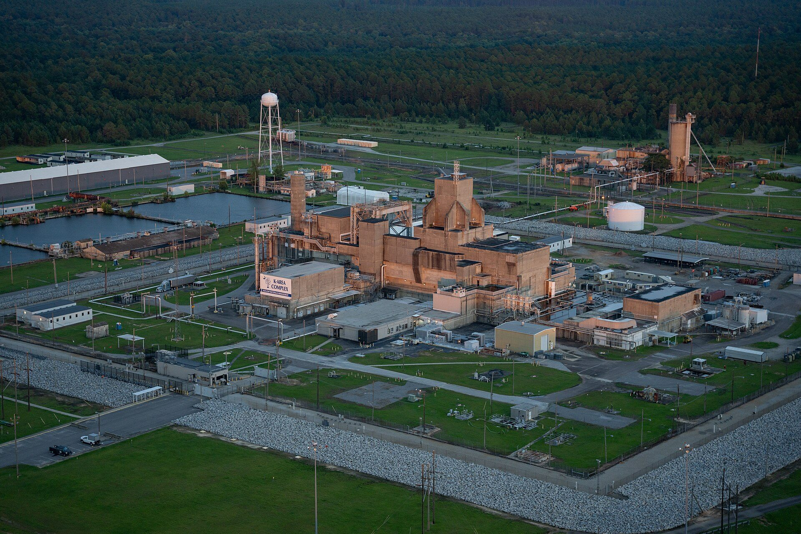
K Area at dusk in July 2024. The old K reactor building is now the K Area Complex. US Department of Energy photograph, public domain, via Wikimedia Commons.
The site's own record is moving. Between May and July 2026, www.srs.gov began sending visitors to a new address, public.srs.gov
(WB: May 2026; WB: July 2026). Old
links mostly still work, but often land on a broader page rather than the
one that was linked, which is why this history cites the Wayback Machine's
copies.
Why This Story Matters
The Savannah River Plant shaped the land, the towns and the lives of the
people around it, and its story is not finished. It is still cleaning up what
it made, while it prepares to make plutonium pits for new weapons. Knowing that history,
from the families moved off the land to the workers who fell sick, is part of
deciding what comes next.
This story could be told because the Internet Archive keeps the record. All 463 sources it cites are held at the Internet Archive:
government documents in Democracy's Library, web pages saved by the Wayback
Machine, and books, magazines and reports in its other collections. When
agencies move their websites and reports go out of print, those copies keep
the history open for anyone to read and check.
To learn how this story was made and how its sources are labeled, see About
This Story. To follow the arguments over the plant, from the
land taken for it to the new pit plant, see Controversies.